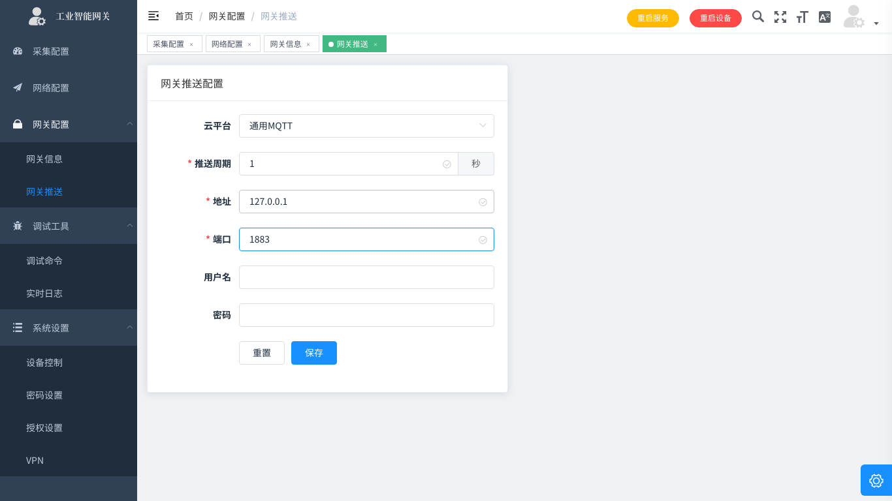

网关推送
目前支持多种平台推送,其他协议如有需求,联系售后,可持续迭代添加,修改推送后,需要重启服务生效

协议文档
网关内置多种平台协议,通用MQTT为本公司定义的简易协议,文档参照巫迪协议
其他协议文档参考平台官网
自定义协议
简单的mqtt格式用户可以自己通过自定义MQTT协议适配
格式如下,完成方法定义即可
function init()
config = {};
config.address = 'tcp://127.0.0.1:1883'
config.interval = 30
config.client_id = 'test'
global_config.topic = 'data/' .. global_config.gateway_id .. '/v1'
return config
end
function gen_message(message)
return message
end
function push_message(message)
log(message)
push(cjson.encode(message), global_config.topic)
end
function init_push(devices)
end
反向控制
通用MQTT支持反向控制,具体控制方法参照API接口